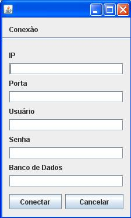

A conexão definirá qual base de dados o usuário se conectará. No caso, ele deverá definir 1) o IP da máquina onde a base de dados se encontra (localhost ou algum IP da rede interna) 2) a porta de conexão (a porta 5432 é a padrão) 3) o nome de usuário e senha para a autenticação na base 4) o nome da base de dados em que o usuário quer se conectar.

Figura 1. Interface de conexão com a base de dados.
Para abrir o frame de conexão com a base de dados o usuário deverá ir em Conexão > Abrir Conexão.
Para desconectar o usuário poderá utilizar o caminho Conexão > Fechar Conexão.